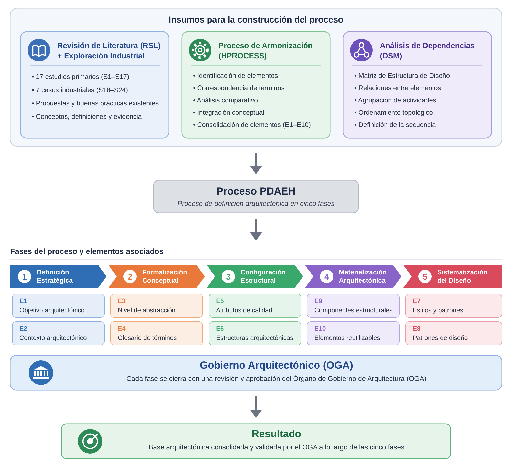

Flujo Global del Proceso PDAEH
Vista integral de las 5 fases, compuertas OGA y ciclo de retroalimentación metodológico.

Navegue por la totalidad del proceso metodológico de forma fluida y continua sin necesidad de ingresar a cada sección individual. Seleccione cualquier fase, elemento arquitectónico o compuerta de gobierno OGA en el panel lateral para visualizar su diagrama BPMN oficial, sus actividades normativas y sus artefactos generados.
Vista integral de las 5 fases, compuertas OGA y ciclo de retroalimentación metodológico.
